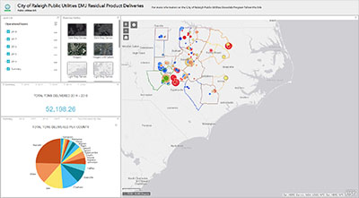
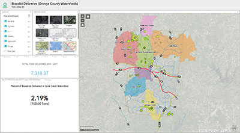
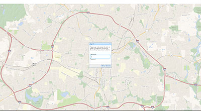
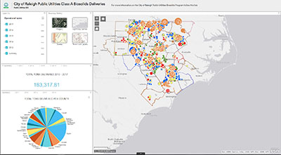

ANALYTICS
HOME
ANALYTICS
GIS MAPPING
RESOURCES
PUGIS Staff
Help Documents
PUMA
City Works
City of Raleigh
CORECON
IT Service Request
REST Services
Wake County GIS
APPLICATIONS
 EMJ Residual Product Deliveries Application.
 Biosolid Deliveries (Orange County Watersheds).
 Sewer Editing Application
 Class A Biosolids Deliveries.